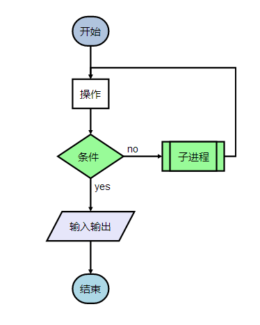

创建一个流程图的基本步骤分两步：一、定义节点；二定义连线。另外可以对节点和连线的样式进行设置。
例如要创建（图一）所示流程图：
图一
1、点击添加按钮（绿色加号），新增一个节点。
2、节点包括四项内容：名字、类型、链接、样式。其中的链接可以为空，其余为必填项
3、节点名字，最终显示在流程图节点的内容。
4、节点类型，start,operation,condition,inputoutput,subroutine,end六种。如（图一）所示。
5、节点链接，在最终生成的流程图中，可以通过点击节点跳转到对应的链接。
6、节点样式，定义节点的显示属性。
7、如果要删除节点，鼠标移至节点前的序号，显示删除按钮（红色叉）。
这是设计中略有难度的地方，建议先准备好流程图的草稿，然后根据草稿依次定义各条连线。连线定义错误将导致无法绘制流程图。
1、从左侧节点列表选择节点，加入右侧列表。
2、在右侧列表中对节点的先后顺序、连线左右方向进行调整。
3、点击添加按钮（绿色加号），将上述右侧列表中调整好的节点生成为一条连线。
4、如果要编辑/删除某连线，鼠标移至连线前的序号，点击删除按钮。
5、重复以上步骤，依次定义流程图的各条连线。
包括节点样式与连线样式。
提供了10种默认节点样式，可以分别进行编辑。定义节点步骤中，节点的样式与此对应。
设置标题字体以及流程图的背景色。